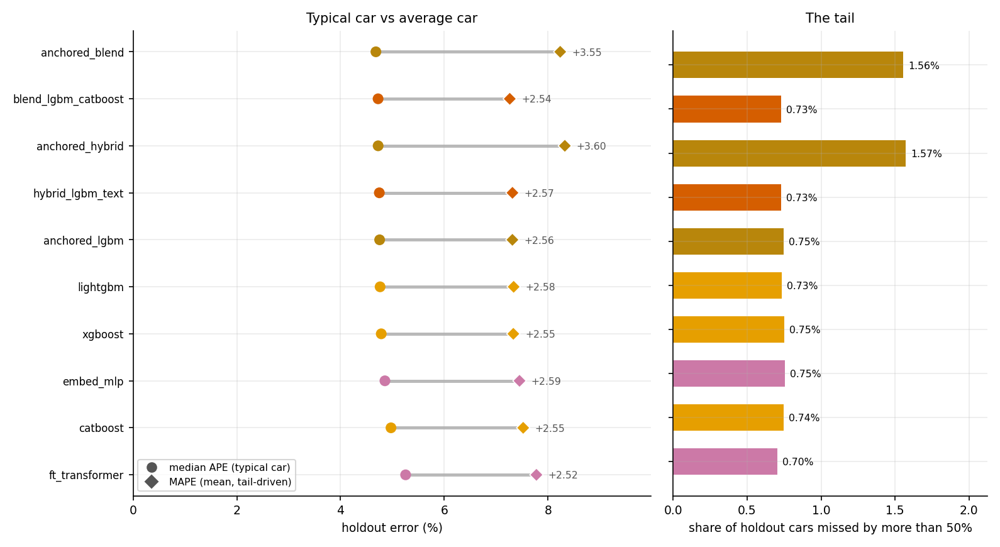
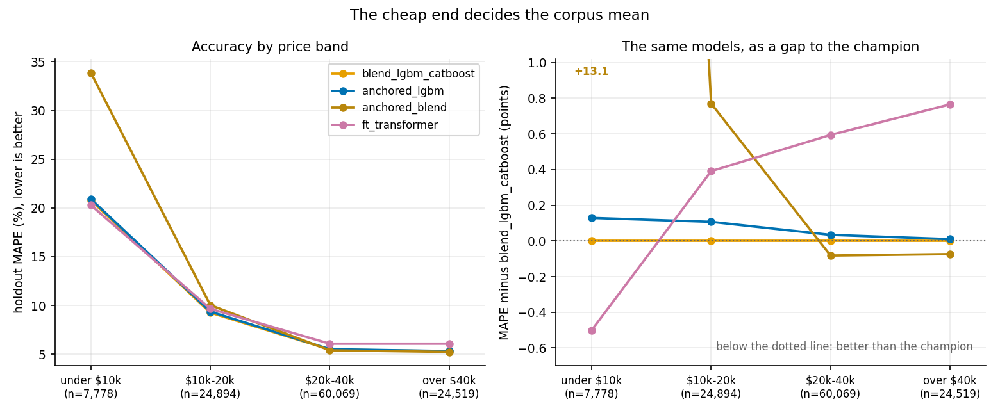

Automated valuation of used vehicles is usually reported as a single accuracy number for a single model class on a fixed dataset, with little attention to whether the evaluation could leak target information, whether the reported ranking would survive a statistical test, whether the model can state its own uncertainty honestly, or whether the ranking is stable when the corpus grows by more than an order of magnitude. We present AppraiseNet, a two-tier study of price estimators together with the production system that operates the result. The pilot tier compares the full zoo of 13 estimators in six families (linear, instance-based, bagged trees, gradient boosting, deep tabular networks and hybrids) on 38,758 curated United States used-vehicle listings; the corpus tier advances the 10 configurations that scale to the full corpus of 1,174,659 listings on a single commodity workstation, adding three production-inspired anchored designs in which a fold-fitted ladder of group-median anchors seeds, offsets or bounds the learner under monotone mileage constraints. All models are compared under the AppraiseNet Evaluation Protocol: a fixed 10 percent holdout scored exactly once per model, five-fold out-of-fold selection, and every fitted statistic, including engineered trim-positioning, anchor and target-encoding features, re-learned inside each fold. Split-conformal calibration gives every model a distribution-free 80 percent prediction interval, and every difference is judged with a paired bootstrap on the shared holdout, for all 45 model pairs and for the median error as well as the mean. At corpus scale the strongest configuration by mean error is LightGBM+CatBoost blend at 7.26 percent holdout MAPE (95 percent CI 7.20 to 7.32), a median absolute error of 4.72 percent, and 78.9 percent of cars priced within 10 percent; empirical interval coverage lies between 80.1 and 80.4 percent against the 80 percent target for every model, and conformalised quantile regression reaches 80.4 percent coverage while narrowing the median interval by 2.6 points of price. Three results appear only at scale. First, the description-text advantage that crowned the pilot champion falls from 0.49 to 0.024 MAPE points once usable text survives on under 3 percent of listings, while a fold-fitted anchor ladder, which every listing supports, buys 0.025 points over the same base and lands statistically tied with the text hybrid. Second, the leaderboard is not a total order: Anchored blend (two engines) holds the best median error in the field (4.68 percent) together with the worst mean (8.24 percent), because bounding a residual around a group anchor mis-prices the cheapest cars, where 4.8 percent of its errors carry 33 percent of its total error. Third, accuracy is cheap: the champion buys its last 0.05 MAPE points with 29 times the compute of the anchored configuration the production system deploys. The study ships as an operable system with a versioned registry, promote-or-rollback retraining, an idempotent daily data-ingest path, drift monitoring and a serving API.
Index Terms: Price estimation, used vehicles, tabular machine learning, gradient boosting, conformal prediction, evaluation methodology, target encoding, data scaling, MLOps.
Pricing a used car is a canonical applied regression problem: the target is continuous and strictly positive, the features mix high-cardinality categoricals (make, model, trim) with numerics (mileage, age, engine specifications) and free text (the listing description), and errors carry direct monetary meaning for buyers, sellers and lenders. Commercial valuation guides answer it at scale, but the academic record is thin in four specific ways. First, published comparisons of learning methods for car prices are frequently vulnerable to target leakage: statistics fitted on the full dataset, engineered features that summarise prices across the evaluation rows, or repeated scoring of the same test split during development [5, 6]. Second, method rankings are almost always asserted from two point estimates, although the difference between well-tuned learners on the same data is often smaller than the resampling noise of the split [7]. Third, point estimates are reported without calibrated uncertainty, although a buyer needs to know whether “$17,400” means plus or minus $800 or plus or minus $5,000. Fourth, comparisons are run once at one corpus size, although the practical question for any pricing team is which method keeps winning as the data grows.
This paper treats these four gaps as the object of study. We compare estimators in seven families under one fixed procedure, the AppraiseNet Evaluation Protocol (Section 4), in two tiers: the full 13-model zoo on a 38,758-listing corpus snapshot (the pilot), and the 10 configurations that scale on 1,174,659 curated real listings (the corpus tier, Section 3). We attach a distribution-free 80 percent prediction interval to every model via split-conformal calibration and an adaptive interval to the production model via conformalised quantile regression [19, 20, 21] (Section 6); we judge every claimed difference with a paired bootstrap over the shared holdout [8], on the mean and on the median and for every pair of models rather than only against the leader (Section 7); and we add to the zoo three anchored configurations (Section ?) that mirror how deployed pricing systems actually work: a ladder of fold-fitted group-median anchors that seeds, offsets and bounds the learner. Finally, because a study that cannot be operated tends to decay, the reference implementation is a production system: a versioned model registry with a promote-or-rollback guardrail, an idempotent ingest path that grows the corpus daily, drift monitoring and a serving API (Section 10).
The contributions are:
A controlled two-tier comparison of seven model families for used-vehicle price estimation, on 38,758 and 1,174,659 curated listings, under a protocol in which every fitted statistic, including engineered trim-positioning, anchor-ladder and target-encoding features that would otherwise leak the target, is re-learned inside each cross-validation fold, and the holdout is scored exactly once per model.
Three production-faithful anchored configurations brought under an academic protocol: anchors as features, anchors as a bounded offset with an inner-out-of-fold regional target encoding, and a two-engine anchored blend. The three separate an ingredient that helps from an ingredient that hurts. As features under monotone mileage constraints the anchor ladder is worth 0.025 MAPE points (95 percent CI 0.007 to 0.042) over the identical booster without it; as a hard bound on a residual it costs about a point of MAPE, for reasons the study localises exactly.
A data-scaling result for pricing models: growing the corpus 30-fold reorders the leaderboard. The pilot’s statistically significant text-hybrid advantage (0.49 MAPE points over its own base) shrinks to 0.024 points at corpus scale, where the description survives on under 3 percent of listings, and the anchor ladder, available for every listing, replaces it with a statistically indistinguishable configuration.
Evidence that a single error summary is not enough to rank pricing models. Under the median absolute percentage error, the metric that describes the car a user is actually holding, the ranking inverts at both ends of the table: the anchored blend is first by median (4.68 percent) and last by mean (8.24 percent). We report the distribution behind both summaries and trace the divergence to a specific, correctable design decision.
Calibrated uncertainty for every model at both scales: empirical holdout coverage between 80.1 and 80.4 percent against an 80 percent target, and a production interval with 80.4 percent coverage at a median width of 18.2 percent of price, 2.6 points narrower than the split-conformal interval of the same configuration.
A statistical reading of the leaderboard that covers all 45 model pairs, not only the gap to the leader: at corpus scale 4 of them remain statistically tied, and the 117,260-car holdout resolves differences an order of magnitude finer than the pilot could.
An operable reference system in which every number in this paper regenerates from persisted artifacts with one command, and the corpus, models and monitoring continue to evolve after publication.
Hedonic price theory models the price of a differentiated good as a function of its attributes [1]; used-vehicle valuation is a natural instance. Applied studies have compared regression methods for car prices, typically on small or scraped datasets: Pudaruth [2] evaluates classical learners on a few hundred listings, Monburinon et al. [3] compare linear and tree ensembles on a larger German corpus, and Pal et al. [4] report random-forest accuracy on the Kaggle used-car corpus. These studies rarely control leakage explicitly, rarely test the significance of their rankings, and do not report calibrated intervals; those omissions motivate the present protocol.
On tabular learning, the question of whether deep networks beat gradient-boosted trees has a substantial recent literature. Entity embeddings for categoricals [15] and attention-based feature tokenisation [16] are the strongest general-purpose deep tabular designs, yet systematic comparisons find well-configured boosting [11, 12, 13] still ahead on medium-sized heterogeneous tables [17, 18]. Our results reproduce this finding on a real commercial task at two corpus sizes, with both deep models implemented natively rather than through wrapper libraries, and we quantify the gap with confidence intervals rather than single numbers. For high-cardinality categoricals we additionally evaluate smoothed target encoding [14] inside the anchored configurations, fitted inner-out-of-fold so the encoding can never memorise its own labels.
For uncertainty, conformal prediction supplies finite-sample, distribution-free coverage guarantees under exchangeability [19, 20, 22]; conformalised quantile regression [21] adds per-example adaptive widths. On methodology, Kaufman et al. [5] catalogue leakage mechanisms, Cawley and Talbot [6] analyse selection bias in evaluation, and Dietterich [7] argues for statistical tests over point comparisons. On the systems side, Sculley et al. [23] describe the operational debt of learning systems, and model cards [24] document intended use; both practices are implemented in the released system.
The corpus contains 1,174,659 used-vehicle listings from the United States market, collected from public marketplaces and dealer websites during July and August 2026 and growing daily through the gated ingest path of Section 10, spanning dealer and private-party sellers, asking prices from $2,000 to $100,000 and model years 1990 and later. The corpus is proprietary and is not distributed; all identity was removed before the data reached this project: no vehicle identification numbers, no listing identifiers, no seller or platform names, locations reduced to state and three-digit postal prefix, and free text scrubbed of telephone numbers, addresses, e-mail addresses and URLs. The study’s first edition, the pilot, ran on the 38,758-listing corpus snapshot of late August 2026; its complete evidence remains committed in the repository and its results are reported in Section 8.
Each raw listing record carried roughly 160 fields: site-specific presentation fields, duplicated specifications in inconsistent formats, sparse single-source columns and seller-entered attributes that contradict the vehicle’s build record. Curation reduced this to a 29-column modelling table through eight documented steps: (i) field triage and vocabulary normalisation; (ii) specification enrichment through the public government vehicle-decoder API, which overrides seller-entered attributes and contributes weight class, series, electrification, driver-assistance and plant-of-manufacture fields; (iii) removal of placeholder and token prices, including listings that advertise a down payment rather than a price, detected from the listing wording; (iv) removal of parts vehicles and non-runners by text rules; (v) the price-band and model-year gates above with odometer plausibility checks; (vi) per-vehicle deduplication across relistings and syndication; (vii) a label-noise quarantine that excludes listings priced below 0.35 or above 2.5 times a preliminary fair-value fit, so typos and misdescribed vehicles cannot poison the target; and (viii) audited merges across collection waves. The same gates guard the production ingest path.
Two fields the raw feed carries are deliberately excluded from the corpus: the listing’s first asking price and the derived percentage price drop. Together with the count of price changes these determine the current asking price almost exactly, so a model given them would be reading the label rather than pricing the car. The count of price cuts alone is kept: it carries demand signal without revealing the answer.
The modelling table contains fourteen categoricals (make, model, trim, body style, drivetrain, transmission, fuel type, electrification, weight class, series, plant country, adaptive cruise, seller type, region state), eleven numerics (mileage, age, miles per year, doors, cylinders, engine power, displacement, original price where shown, manufacturer sticker price where known, days on market at collection, number of observed price cuts) and the scrubbed description text. All models are trained on \(y=\log(\text{price})\): price errors are relative by nature, a $500 miss being severe on a cheap car and negligible on an expensive one, so log space makes errors comparable across the whole price band, and the exponential of a symmetric interval in log space yields the asymmetric dollar interval a buyer needs.
One property of the corpus changed qualitatively between the tiers and matters for the results: description text. In the pilot snapshot essentially every listing carried a full description; the collection waves that grew the corpus 30-fold harvest structured listing data at scale, and fewer than 3 percent of corpus-tier rows carry usable text. Section 9 shows what this does to the text-residual hybrid.
A synthetic generator with the identical schema and plausible price physics substitutes for the corpus in the released repository: the test suite, the continuous-integration pipeline and any reader run the complete study end to end without the private data, with every output clearly labelled synthetic.
Every model in both tiers is evaluated under one fixed procedure.
A 10 percent holdout is drawn once with a fixed seed and scored exactly once per model; it participates in no selection decision. At corpus scale this is 117,260 listings against 1,057,399 for training; in the pilot, 3,893 against 34,865. The training partition is assigned to five cross-validation folds.
Every fitted statistic is learned inside the fold: categorical vocabularies (unseen levels at evaluation time become missing values, never new categories), imputation medians, standardisation moments, the engineered trim tier categorical, which ranks a trim’s median log price within its model line (top, upper, mid, base; groups with fewer than four training examples fall back to unknown), and, for the anchored configurations of Section ?, the anchor ladder, the state price index and the regional target encoding. Computed on the full dataset any of these would leak the target into the inputs; the protocol therefore treats them as model parameters, refitted once per fold and once for the final fit.
Out-of-fold predictions supply the selection metrics and the conformal calibration residuals. Each model is then refitted on the full training partition and predicts the holdout; only those numbers are quoted as performance. Metrics are computed in price space: per-car absolute percentage error \(\mathrm{APE}_i=\lvert\exp(p_i-y_i)-1\rvert\), its mean (MAPE) and median, the share of cars within 10 percent, \(R^2\) in log space, and interval coverage and width.
Every model runs with fixed, documented hyper-parameters (Section 5); the study compares families under equal conditions rather than tuning budgets. One feature-space object serves each family its natural encoding of the same information: frozen-level pandas categoricals for the boosting libraries, raw category strings for CatBoost, ordinal codes with median imputation for the bagged trees, a compact top-40 one-hot with standardised numerics for the linear and instance models, and integer codes with standardised numerics for the networks.
The corpus tier runs every configuration whose memory and computation scale to 1,174,659 rows on a single commodity workstation: the three boosting libraries, their blend, the text hybrid, both deep networks and the three anchored configurations. The whole tier takes 39 hours of single-machine compute, 27 of them for the FT-Transformer alone. The classical baselines are excluded there by arithmetic, not by choice: the one-hot design matrix for the linear and \(k\)-NN models grows to several gigabytes and the \(k\)-NN distance computation to the order of \(10^{13}\) operations, while unbounded-depth bagged trees exhaust memory on a million rows. Those baselines are reported at pilot scale, where the full zoo runs, and the pilot’s committed evidence makes the two tiers directly comparable model by model.
The zoo spans seven families; complete hyper-parameters are in the repository’s methods document.
Ridge regression (\(\alpha=3\)) and elastic net (\(\alpha=10^{-3}\), \(\ell_1\) ratio 0.3) on the one-hot view, and a \(k\)-nearest-neighbour model (\(k=15\), distance weighting) that formalises the practitioner’s “find comparable cars” heuristic.
RandomForest (300 trees) and ExtraTrees (400 trees), both with feature subsampling.
LightGBM (1,500 rounds, 63 leaves, learning rate 0.03) [11], XGBoost (2,000 trees, depth 8, native categorical support) [12] and CatBoost (2,500 iterations, depth 8) [13].
An entity-embedding multilayer perceptron [15] (per-categorical embeddings of dimension \(\min(32,\max(4,\lceil 1.6\,c^{0.56}\rceil))\) for cardinality \(c\), a 256-128 GELU trunk with dropout) and a compact FT-Transformer [16] (token dimension 48, three pre-norm encoder layers, six heads, a CLS token pooled by a linear head), both implemented in PyTorch in roughly 150 lines. Both train with AdamW under a cosine schedule, Huber loss, early stopping on a validation slice, and a target standardised to z-space, which converges in a handful of epochs where raw-target training needs dozens. At corpus scale the batch grows from 1,024 to 4,096 and the epoch budget drops from 40 to 20: at 30 times the data volume an epoch sees vastly more examples, and early stopping governs in both regimes.
Three combinations test whether model diversity or extra signal buys accuracy. A blend averages LightGBM and CatBoost. A stacked ensemble (pilot tier) fits a ridge meta-learner on three-fold inner out-of-fold predictions of LightGBM, XGBoost and ExtraTrees, so the meta-learner never sees a base prediction for a row that base was fitted on. The text-residual hybrid fits a TF-IDF ridge (word unigrams and bigrams, minimum document frequency 20, at most 20,000 features) on the inner out-of-fold residuals of a LightGBM base, and at inference adds its correction clipped to \(\pm 0.15\) in log space, roughly \(\pm 14\) percent in price: the listing text may nudge a price, never invent one.
Deployed pricing systems rarely ask a learner to price a car from nothing. They first place the car in its market group and let the learner explain the deviation. The anchored family brings that design under the protocol, in three steps of increasing fidelity to practice.
A ladder of log-price group medians is fitted on the training rows only: trim group (make, model, trim; at least 8 training rows), then model plus two-year window (at least 8), then model line (at least 5), then make plus body style (at least 30), then the global median. Every car receives the first anchor its group supports, written \(a(x)\), plus a state price index (state median minus global median, for states with at least 300 training rows). Like every fitted statistic in the protocol, the ladder is re-learned inside each fold.
The study’s standard LightGBM configuration with the two anchor features appended and monotone decreasing constraints on mileage and miles per year: more miles can never raise a price, all else equal. The anchor arrives as information; the learner still predicts the price directly, and remains free to disagree with the anchor by any amount. This is the configuration the production system deploys (Section 10), and it is fitted through the same code path in both places.
The anchor becomes the prediction’s spine. The booster is trained on the residual \(r = y - a(x)\), seeing the anchor features plus a smoothed target encoding [14] of the three-digit region computed on the regional residuals, \(\mathrm{te}(z) = (\mathrm{sum}_z + m\,\bar{r})/(n_z + m)\) with \(m{=}50\): a region with few cars shrinks to the global mean, a region with thousands speaks for itself. For training rows the encoding is built inner-out-of-fold (five inner folds, each row encoded by the other four); for evaluation rows it is fitted on the full training partition. The final prediction is \(a(x) + \mathrm{clip}(\hat{r}, \pm 0.75)\): a car can never be priced further than about 2.1 times from its own market group’s anchor, which is what keeps rare and thinly-supported cars robust instead of extrapolated. The bound is a fixed constant, applied identically to a common sedan and to a fifteen-year-old truck; Section 9 measures what that costs.
Two independent residual engines over the identical stage: the monotone LightGBM above, and the study’s standard CatBoost configuration on raw category strings. Their residual predictions are averaged in log space (a geometric mean in price space) before the same \(\pm 0.75\) bound is applied. Two boosters with different categorical handling make uncorrelated mistakes on thin groups; the average keeps the strengths of both. This is the configuration an internal five-candidate engine bakeoff on the production side had selected for deployment-grade robustness; the fifth candidate, blending toward raw comparable-car medians, degraded accuracy there too and survives only as the anchor ladder itself. Bringing that selection under the protocol is one of the things this study is for: on the full corpus the bakeoff’s winner turns out to hold the best median error and the worst mean in the field, and Section 9 shows why an internal evaluation on mid-band inventory would not have seen it.
Every model receives a split-conformal interval [19, 20]. With out-of-fold absolute residuals \(r_1,\dots,r_n\) in log space, the widening constant is the corrected quantile \(q=\mathrm{Quantile}\bigl(r,\lceil (n{+}1)\,0.8\rceil/n\bigr)\), and the interval for a holdout car with prediction \(p\) is \([\exp(p-q),\,\exp(p+q)]\); marginal 80 percent coverage is guaranteed under exchangeability, and Section 9 verifies it empirically. The production model additionally uses conformalised quantile regression [21]: LightGBM quantile models for the 10th and 90th percentiles, conformity scores \(s_i=\max(\hat{l}_i-y_i,\,y_i-\hat{u}_i)\) on out-of-fold predictions, and both quantiles widened by the corrected quantile of \(s\). CQR keeps the guarantee while letting the width adapt per car: wide for a rare old truck, narrow for a common commuter sedan.
All models in a tier predict the same holdout cars, so differences are judged on paired errors [7]. A paired bootstrap [8] resamples holdout indices 4,000 times, applying the same draw to every model, and yields a 95 percent percentile interval for each model’s error and for its gap to the leader. A model whose gap interval includes zero is reported as statistically tied; the study never claims a ranking the data cannot support. Three details matter at corpus scale.
First, the same draws also resolve every pair, not only each model against the leader: with 10 models the study reports all 45 pairwise gaps, because a claim about two models in the middle of the table needs its own interval. Second, the bootstrap is applied to the median absolute percentage error as well as to the mean. MAPE is a mean and therefore a statement about a model’s tail; the median is a statement about the typical car, and Section 9 shows the two disagreeing about who is best. Third, the corpus tier’s 117,260-car holdout shrinks the bootstrap noise by roughly a factor of five relative to the pilot, so differences of a few hundredths of a MAPE point become resolvable; that resolution is what makes a 0.024-point gap reportable as significant, and it is also why significance and importance have to be read separately here.
| Model | Family | CV | Holdout | 95 % CI | Median | \(\le\)10 % | Coverage | Width | Fit (min) |
|---|---|---|---|---|---|---|---|---|---|
| LightGBM + text residual | hybrid | 10.91 | 10.75 | [10.40, 11.12] | 7.33 | 62.4 | 79.8 | 33.3 | 5.5 |
| Stacked ensemble | hybrid | 11.16 | 11.02 | [10.65, 11.39] | 7.58 | 61.1 | 79.7 | 34.3 | 14 |
| LightGBM+CatBoost blend | hybrid | 11.14 | 11.08 | [10.71, 11.45] | 7.48 | 60.6 | 79.9 | 34.0 | 7.9 |
| XGBoost | boosting | 11.37 | 11.19 | [10.81, 11.57] | 7.59 | 60.6 | 79.9 | 34.8 | 2.1 |
| LightGBM | boosting | 11.40 | 11.24 | [10.88, 11.62] | 7.63 | 60.6 | 79.6 | 34.9 | 1.7 |
| CatBoost | boosting | 11.58 | 11.58 | [11.19, 11.98] | 8.05 | 58.2 | 80.0 | 35.5 | 6.1 |
| Embedding MLP | deep tabular | 12.19 | 11.94 | [11.55, 12.34] | 8.44 | 56.7 | 79.9 | 37.2 | 0.7 |
| FT-Transformer | deep tabular | 12.76 | 12.36 | [11.95, 12.76] | 8.90 | 54.7 | 80.9 | 39.9 | 13 |
| ExtraTrees | bagged trees | 13.11 | 12.88 | [12.44, 13.32] | 8.54 | 55.6 | 79.9 | 39.9 | 0.3 |
| RandomForest | bagged trees | 13.73 | 13.49 | [13.03, 13.97] | 9.24 | 53.0 | 80.1 | 41.9 | 0.4 |
| \(k\)-NN comparables | instance | 15.54 | 15.22 | [14.74, 15.71] | 10.79 | 47.0 | 80.5 | 47.9 | 0.1 |
| Ridge | linear | 18.90 | 18.93 | [18.34, 19.53] | 14.18 | 37.7 | 80.1 | 58.7 | 0.1 |
| Elastic net | linear | 19.32 | 19.42 | [18.79, 20.04] | 14.43 | 36.5 | 79.8 | 60.2 | 0.1 |
The pilot ran the full 13-model zoo on 38,758 listings (Table 1). Four findings summarise it. First, with full description coverage the text-residual hybrid was champion at 10.75 percent holdout MAPE (median 7.33 percent, 62.4 percent of cars within 10 percent), a statistically significant 0.49-point improvement over its own LightGBM base (11.24 percent) and ahead of the stacked ensemble (11.02 percent). Second, boosting dominated the single-model field and both deep architectures landed behind it (best deep: 11.94 percent), reproducing the pattern of controlled tabular comparisons [17, 18]. Third, the instance-based comparables model (15.22 percent) and the linear models (up to 19.42 percent) trailed by 2 to 8 points: interactions among make, model, trim, age and mileage are the heart of the problem. Fourth, split-conformal coverage held near the 80 percent target for all thirteen models. The pilot’s complete evidence, comparison statistics included, is committed in the repository and remains the reference point for the baselines that cannot ride the full corpus.
| Model | Family | CV | Holdout | 95 % CI | Median | \(\le\)10 % | Coverage | Width | Fit (min) |
|---|---|---|---|---|---|---|---|---|---|
| LightGBM+CatBoost blend | hybrid | 7.27 | 7.26 | [7.20, 7.32] | 4.72 | 78.9 | 80.1 | 20.8 | 213 |
| Anchored LightGBM | anchored | 7.31 | 7.31 | [7.25, 7.37] | 4.75 | 78.6 | 80.1 | 21.0 | 7.3 |
| LightGBM + text residual | hybrid | 7.32 | 7.32 | [7.26, 7.38] | 4.75 | 78.8 | 80.1 | 21.0 | 17 |
| XGBoost | boosting | 7.32 | 7.33 | [7.27, 7.39] | 4.79 | 78.8 | 80.1 | 20.9 | 23 |
| LightGBM | boosting | 7.34 | 7.34 | [7.28, 7.40] | 4.76 | 78.6 | 80.1 | 21.0 | 5.8 |
| Embedding MLP | deep tabular | 7.50 | 7.45 | [7.39, 7.51] | 4.86 | 77.9 | 80.3 | 21.5 | 24 |
| CatBoost | boosting | 7.54 | 7.52 | [7.46, 7.58] | 4.97 | 77.6 | 80.1 | 21.7 | 213 |
| FT-Transformer | deep tabular | 7.92 | 7.78 | [7.72, 7.84] | 5.25 | 75.8 | 80.4 | 23.0 | 1609 |
| Anchored blend (two engines) | anchored | 8.20 | 8.24 | [8.14, 8.33] | 4.68 | 78.5 | 80.1 | 21.1 | 211 |
| Anchored hybrid (residual) | anchored | 8.30 | 8.32 | [8.23, 8.42] | 4.72 | 78.2 | 80.2 | 21.4 | 7.9 |
Table 2 and Fig. 1 give the corpus-scale picture. Seven findings stand out, and the last four of them are visible only because the corpus is large enough to resolve them.
The leading configuration by mean error is LightGBM+CatBoost blend at 7.26 percent holdout MAPE (95 percent CI 7.20 to 7.32), a median absolute error of 4.72 percent and 78.9 percent of cars priced within 10 percent of the asking price. Every one of the 7 configurations that ran at both scales improves on its pilot-tier self, by between 3.4 and 4.6 MAPE points: thirty times the data is worth several points to any model able to absorb it, and worth most to the models that were furthest behind. The ordering also tightens. Of the 45 model pairs, only 4 remain statistically tied on the holdout, and the entire non-anchored field is now spread over half a MAPE point where the pilot spread it over nine.
The pilot champion’s mechanism required descriptions to read. At corpus scale, where usable text survives on fewer than 3 percent of listings, the text hybrid scores 7.32 percent against 7.34 percent for its own LightGBM base: a gain of 0.024 points (95 percent CI 0.020 to 0.027), still statistically resolvable on 117,260 cars but twenty times smaller than the 0.49 points it was worth in the pilot. The lesson is not that text is worthless; it is that a signal’s value is bounded by its coverage, and a pipeline that leans on a low-coverage signal inherits its fragility. The corpus tier supplies the replacement. Giving the same booster the fold-fitted anchor ladder and monotone mileage constraints instead of the text buys 0.025 points (95 percent CI 0.007 to 0.042) over the identical base, and the anchored and text-hybrid configurations are one of the 4 statistically tied pairs in the study. One of the two needs a listing description; the other needs only the fields every listing carries.
| Model | Median | 95 % CI | MAPE | \(\le\)5 % | p90 | p99 | \(>\)50 % | Tail share |
|---|---|---|---|---|---|---|---|---|
| LightGBM+CatBoost blend | 4.72 | [4.69, 4.76] | 7.26 | 52.2 | 15.4 | 43.4 | 0.73 | 21.5 |
| Anchored LightGBM | 4.75 | [4.72, 4.79] | 7.31 | 51.9 | 15.5 | 43.3 | 0.75 | 21.9 |
| LightGBM + text residual | 4.75 | [4.72, 4.78] | 7.32 | 52.0 | 15.5 | 43.6 | 0.73 | 21.8 |
| XGBoost | 4.79 | [4.75, 4.82] | 7.33 | 51.8 | 15.5 | 44.2 | 0.75 | 22.0 |
| LightGBM | 4.76 | [4.73, 4.80] | 7.34 | 51.9 | 15.6 | 43.8 | 0.73 | 21.9 |
| Embedding MLP | 4.86 | [4.82, 4.89] | 7.45 | 51.1 | 15.8 | 44.4 | 0.75 | 22.2 |
| CatBoost | 4.97 | [4.93, 5.01] | 7.52 | 50.2 | 15.9 | 44.3 | 0.74 | 21.6 |
| FT-Transformer | 5.25 | [5.21, 5.29] | 7.78 | 48.1 | 16.4 | 43.5 | 0.70 | 21.5 |
| Anchored blend (two engines) | 4.68 | [4.65, 4.72] | 8.24 | 52.5 | 16.1 | 67.8 | 1.56 | 32.9 |
| Anchored hybrid (residual) | 4.72 | [4.69, 4.76] | 8.32 | 52.2 | 16.4 | 68.6 | 1.57 | 33.2 |
Table 3 reports the distribution behind each row of the leaderboard, and it does not agree with Table 2 about who is best. Anchored blend (two engines) has the lowest median absolute error in the field, 4.68 percent against the champion’s 4.72 percent, a gap of 0.042 points with a 95 percent paired interval of 0.014 to 0.071 that excludes zero, and it prices 52.5 percent of holdout cars within 5 percent, more than any other configuration. Its MAPE is nonetheless the worst in the study at 8.24 percent. The two summaries disagree because they are measuring different things: the same model’s 99th percentile error is 68 percent against the champion’s 43 percent, it misses by more than half the asking price on 1.56 percent of cars against 0.73 percent, and 4.8 percent of its predictions carry 33 percent of its total absolute error against 21 percent for the champion. Fig. 2 shows both panels of that story for the whole field. Reporting only a mean would have hidden a design that is better than the champion for most cars; reporting only a median would have hidden that the same design fails badly for some.

| Band | \(n\) | Blend | Anch. LGBM | Anch. blend | Anch. hybrid | FT-Trans. |
|---|---|---|---|---|---|---|
| under $10k | 7,778 | 20.79 | 20.91 | 33.86 | 34.13 | 20.29 |
| $10k-20k | 24,894 | 9.26 | 9.37 | 10.03 | 10.21 | 9.65 |
| $20k-40k | 60,069 | 5.48 | 5.51 | 5.40 | 5.45 | 6.07 |
| over $40k | 24,519 | 5.31 | 5.32 | 5.24 | 5.27 | 6.08 |
The failure is localisable and it is not the anchor ladder as such: the anchored LightGBM, which receives the same anchors as plain features, is the second most accurate model in the study. What separates it from the two residual engines is the bound. Of the anchored blend’s misses beyond 50 percent, 96 percent are over-predictions (90 percent for the champion), and it prices 0.52 percent of cars at more than double their asking price against 0.14 percent. Table 4 and Fig. 3 locate them: under $10,000 the anchored blend scores 33.86 percent MAPE against the champion’s 20.79 percent, while in the same run it is the most accurate model in the corpus above $20,000 (5.40 and 5.24 percent against 5.48 and 5.31). The mechanism follows from the design of Section ?. The ladder’s first rung groups make, model and trim with no model-year term, so a fifteen-year-old car inherits an anchor set by the newer examples that dominate its trim group, and the residual bound of \(\pm 0.75\) in log space then forbids the learner from descending more than a factor of 2.1 below it. A car whose fair price is a fifth of its trim group’s median cannot be reached, and the prediction stops where the bound stops. Those cars are concentrated in one band that is 6.6 percent of the holdout and, being cheap, carries percentage errors large enough to decide the corpus mean. The bound was introduced to keep thinly-supported cars from being extrapolated, and it does that; the study’s finding is that a constant bound is the wrong shape for it, and that the correction (a rung that separates model years, or a bound scaled by the within-group price dispersion) is a design change rather than a modelling limit. We report the configurations as they were run rather than tuning them after seeing the holdout, which is what the protocol requires.

Empirical holdout coverage of the split-conformal intervals lies between 80.1 and 80.4 percent for all 10 models against the 80 percent target: the guarantee is not decorative, at either scale. What differs is width. In the pilot, conformalised quantile regression matched the split-conformal width and bought only per-car adaptivity; at corpus scale it attains 80.4 percent coverage at a median width of 18.2 percent of price, 2.6 points narrower than the same configuration’s split-conformal interval, because a million rows are enough to fit honest conditional quantiles.
The best deep model reaches 7.45 percent, and the embedding MLP now passes CatBoost, which it trailed by 0.36 points in the pilot. More data helps the networks, and it helps them faster than it helps the boosting libraries. It does not overturn the order: the boosting and anchored families still convert the same data more efficiently on this heterogeneous, high-cardinality table, consistent with [17, 18]. The FT-Transformer remains last of the non-anchored field while consuming more compute than every other model in the study combined.
Fig. 4 plots accuracy against the protocol’s fit time. The champion blend needs 213 minutes to finish 7.26 percent; the anchored LightGBM needs 7 for 7.31 percent. The champion’s advantage is real and statistically resolved, and it costs 29 times the compute, because half of the blend is a CatBoost fit. A retraining schedule that runs daily and a study that runs once do not value that trade the same way, which is why Section 10 deploys the cheaper configuration and the paper reports the more accurate one.

| Segment | \(n\) | Blend | Anch. LGBM | Text hybrid | XGBoost | LightGBM |
|---|---|---|---|---|---|---|
| under $10k | 7,778 | 20.8 | 20.9 | 20.9 | 21.3 | 21.0 |
| $10k-20k | 24,894 | 9.3 | 9.4 | 9.3 | 9.4 | 9.4 |
| $20k-40k | 60,069 | 5.5 | 5.5 | 5.5 | 5.5 | 5.6 |
| over $40k | 24,519 | 5.3 | 5.3 | 5.3 | 5.2 | 5.3 |
| age 0-3y | 61,224 | 5.1 | 5.1 | 5.1 | 5.1 | 5.1 |
| age 4-10y | 43,673 | 7.8 | 7.9 | 7.9 | 7.9 | 8.0 |
| age 11y+ | 12,363 | 15.9 | 16.1 | 16.1 | 16.3 | 16.2 |
| 150k+ miles | 5,064 | 17.2 | 17.3 | 17.4 | 17.8 | 17.4 |
| private seller | 197 | 19.6 | 19.8 | 20.8 | 18.7 | 21.0 |


Table 5 slices the holdout along the axes where valuation models usually hide their weaknesses. The pattern from the pilot survives at scale: recent cars in the middle of the price band are easy, while cheap, old, high-mileage and private-party cars remain the hard segments; these are exactly where condition, maintenance history and seller behaviour, which structured listings describe only partially, dominate the price. One segment is worth reading with care. The private-party slice holds the same 197 holdout cars in both tiers, because the collection waves that multiplied the corpus harvest dealer inventory: the corpus tier is thirty times better powered everywhere except on the segment its errors are largest. Fig. 5 shows the champion calibrated across the predicted-price range, and Fig. 6 the error distributions of the strongest models.
The study is operated, not archived. Storage is one URL that accepts an embedded database file or a PostgreSQL connection string; every reader and writer in the package goes through the same layer. New listings enter through an idempotent ingest command: rows pass the same quality gates as training, are fingerprinted on their identifying fields, and only never-seen listings are appended, with every run audited, so a daily job can never duplicate or dirty the corpus; this is the path on which the corpus grew from 38,758 to 1,174,659 listings. A retraining command fits the production configuration and promotes it only if its holdout MAPE is within 0.3 points of the serving model, otherwise the previous version keeps serving; versions are semantic and archived for rollback. The serving API returns the point price with its calibrated interval, hot-reloads on promotion and logs every prediction; a drift monitor compares recent traffic against the training reference with population-stability indices and warn and alert thresholds.
Two deployment decisions deserve note. The API receives a structured specification without a listing description, so the text hybrid is excluded from serving by construction and the deployed choice is made among the text-free configurations. Among those, production runs the anchored LightGBM: it is statistically tied with the text hybrid it replaces, it is 0.025 points ahead of the plain booster it replaced in the previous edition, it carries the monotone mileage constraint a pricing API should not violate in front of a user, and it retrains for 7 minutes rather than 213. It uses the anchor ladder as features only; the bounded residual designs of Section ?, whose cheap-car behaviour Section 9 dissects, are not deployed. The staged artifact therefore carries the fitted ladder alongside the booster, the feature space and the quantile models, and the serving path applies the ladder to every request before predicting. The interval remains CQR, fitted on the same protocol.
The target is the asking price, not the transaction price; the model estimates what comparable cars are listed for, and dealer negotiation margins are outside the data. The corpus covers the United States market, capped at $100,000 and model year 1990 or later; collector and exotic vehicles are out of scope by design.
The two-tier design compares the classical baselines to the field at pilot scale only: their exclusion from the corpus tier is an arithmetic consequence of quadratic memory and distance costs on a single workstation, and a cluster could lift it, but their pilot-tier deficit of 2 to 8 MAPE points and the direction of every scaling curve make a reversal implausible. Growth was also not uniform across the corpus: the collection waves harvest dealer inventory, so the private-party segment holds the same 197 holdout cars in both tiers and remains the least well powered slice of the study, which is unfortunate precisely because it is among the hardest.
The anchored residual configurations are reported as specified rather than repaired. Section 9 identifies both the failure and its cause, and the obvious corrections, a ladder rung that separates model years before it groups trims, or a bound scaled by within-group price dispersion instead of a constant, are single-line changes; measuring them means re-running the corpus tier under the protocol, so they are stated as future work rather than folded silently into these numbers.
The protocol uses a single fixed holdout with bootstrap uncertainty rather than repeated re-splits, a deliberate trade against the 39-hour cost of the corpus-scale study; the cross-validation column provides the complementary resampling view, and the two agree to within a few hundredths of a point for every model. Hyper-parameters are fixed per family rather than tuned per model, so the comparison bounds each family’s performance under sensible defaults rather than its ceiling; the deep models, which are the most sensitive to that choice, are the most likely to be understated. Vehicle condition and accident history are observed only through the listing, which the segment analysis shows is precisely where the remaining error concentrates.
Under a protocol that removes leakage by construction, attaches calibrated uncertainty to every model, tests every claimed difference and repeats the exercise at two corpus sizes an order of magnitude apart, used-vehicle price estimation resolves clearly, and it resolves differently at scale. At 38,758 listings the winning move was reading the description text. At 1,174,659 listings the text has nearly vanished from the feed, the winning moves are the ones deployed systems already use, market-group anchors and monotone constraints on top of gradient boosting, and the best configuration reaches 7.26 percent MAPE with 80 percent intervals whose coverage holds empirically.
The scale also exposes two things a smaller study could not have seen. A leaderboard ordered by mean error is not the same leaderboard ordered by median error, and the model that wins one loses the other for a reason that is mechanical rather than statistical: a constant bound around a group anchor protects thin groups and, in the same stroke, traps the cheapest cars above their price. And the accuracy differences that survive a paired bootstrap on a hundred thousand cars are small enough that compute, retraining cadence and the shape of the failures matter more than the ranking does, which is why the deployed configuration is the second-place one.
The released system keeps the study alive: the corpus grows through gated daily ingest, retraining is guarded by promotion rules, and every number in this paper regenerates from persisted artifacts with one command. Future work targets the diagnosis directly, with a year-aware anchor rung and a dispersion-scaled bound, and then the segments that remain hard for every model: explicit condition modelling, transaction-price supervision where obtainable, private-party collection to power the slice that scale has so far skipped, and pretrained language representations for the text stage on the surfaces where text still exists.
S. Rosen, “Hedonic prices and implicit markets: Product differentiation in pure competition,” Journal of Political Economy, vol. 82, no. 1, pp. 34 to 55, 1974.
S. Pudaruth, “Predicting the price of used cars using machine learning techniques,” International Journal of Information and Computation Technology, vol. 4, no. 7, pp. 753 to 764, 2014.
N. Monburinon, P. Chertchom, T. Kaewkiriya, S. Rungpheung, S. Buya, and P. Boonpou, “Prediction of prices for used car by using regression models,” in Proc. ICBIR, 2018, pp. 115 to 119.
N. Pal, P. Arora, P. Kohli, D. Sundararaman, and S. S. Palakurthy, “How much is my car worth? A methodology for predicting used cars’ prices using random forest,” in Advances in Information and Communication Networks, Springer, 2019, pp. 413 to 422.
S. Kaufman, S. Rosset, C. Perlich, and O. Stitelman, “Leakage in data mining: Formulation, detection, and avoidance,” ACM TKDD, vol. 6, no. 4, 2012.
G. C. Cawley and N. L. C. Talbot, “On over-fitting in model selection and subsequent selection bias in performance evaluation,” JMLR, vol. 11, pp. 2079 to 2107, 2010.
T. G. Dietterich, “Approximate statistical tests for comparing supervised classification learning algorithms,” Neural Computation, vol. 10, no. 7, pp. 1895 to 1923, 1998.
B. Efron, “Bootstrap methods: Another look at the jackknife,” The Annals of Statistics, vol. 7, no. 1, pp. 1 to 26, 1979.
L. Breiman, “Random forests,” Machine Learning, vol. 45, no. 1, pp. 5 to 32, 2001.
P. Geurts, D. Ernst, and L. Wehenkel, “Extremely randomized trees,” Machine Learning, vol. 63, no. 1, pp. 3 to 42, 2006.
G. Ke, Q. Meng, T. Finley, T. Wang, W. Chen, W. Ma, Q. Ye, and T.-Y. Liu, “LightGBM: A highly efficient gradient boosting decision tree,” in Proc. NeurIPS, 2017.
T. Chen and C. Guestrin, “XGBoost: A scalable tree boosting system,” in Proc. KDD, 2016, pp. 785 to 794.
L. Prokhorenkova, G. Gusev, A. Vorobev, A. V. Dorogush, and A. Gulin, “CatBoost: Unbiased boosting with categorical features,” in Proc. NeurIPS, 2018.
D. Micci-Barreca, “A preprocessing scheme for high-cardinality categorical attributes in classification and prediction problems,” ACM SIGKDD Explorations, vol. 3, no. 1, pp. 27 to 32, 2001.
C. Guo and F. Berkhahn, “Entity embeddings of categorical variables,” arXiv:1604.06737, 2016.
Y. Gorishniy, I. Rubachev, V. Khrulkov, and A. Babenko, “Revisiting deep learning models for tabular data,” in Proc. NeurIPS, 2021.
R. Shwartz-Ziv and A. Armon, “Tabular data: Deep learning is not all you need,” Information Fusion, vol. 81, pp. 84 to 90, 2022.
L. Grinsztajn, E. Oyallon, and G. Varoquaux, “Why do tree-based models still outperform deep learning on typical tabular data?” in Proc. NeurIPS Datasets and Benchmarks, 2022.
V. Vovk, A. Gammerman, and G. Shafer, Algorithmic Learning in a Random World. Springer, 2005.
J. Lei, M. G’Sell, A. Rinaldo, R. J. Tibshirani, and L. Wasserman, “Distribution-free predictive inference for regression,” JASA, vol. 113, no. 523, pp. 1094 to 1111, 2018.
Y. Romano, E. Patterson, and E. Candès, “Conformalized quantile regression,” in Proc. NeurIPS, 2019.
A. N. Angelopoulos and S. Bates, “Conformal prediction: A gentle introduction,” Foundations and Trends in Machine Learning, vol. 16, no. 4, pp. 494 to 591, 2023.
D. Sculley, G. Holt, D. Golovin, E. Davydov, T. Phillips, D. Ebner, V. Chaudhary, M. Young, J.-F. Crespo, and D. Dennison, “Hidden technical debt in machine learning systems,” in Proc. NeurIPS, 2015.
M. Mitchell, S. Wu, A. Zaldivar, P. Barnes, L. Vasserman, B. Hutchinson, E. Spitzer, I. D. Raji, and T. Gebru, “Model cards for model reporting,” in Proc. FAT*, 2019, pp. 220 to 229.